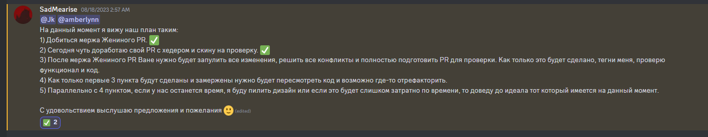
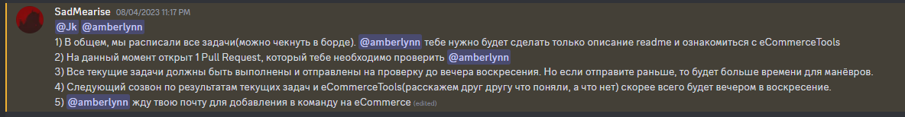
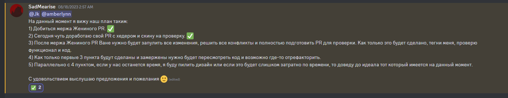
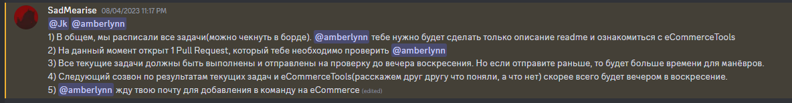

Создан Никитой Хрусталевым, Иваном Тимошкиным и Евгенией Мoстoвой
Todo
In Progress
Review
Done
GitHub Аналитика
Pull Request #4: Настройка среды разработки и скрипты
Код-ревью:
Pull Request #71: Реализация страницы корзины
Общее код-ревью:

 


